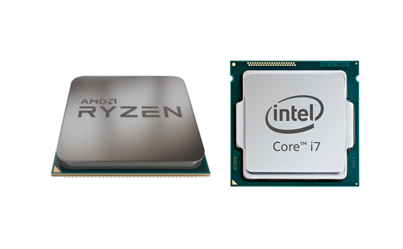

Como bien sabemos, el armado de una computadora puede llegar a ser una de las experiencias mas emocionantes. Si bien, muchos tienen sus dudas al principio de que partes la componen, en donde las puedo comprar; de un componente en especifico que ensambladora los hace mejor, etc.
Por lo tanto, en este articulo trataremos de solventar todas esas dudas que te atormentan para que así te des paso a una de las experiencias mas placenteras de todo amante de la tecnología.
Para este apartado, primero debes aclarar ¿Para que la quieres? Parecerá una pregunta obvia para algunos, pero recuerda que una computadora con especificaciones gamer también es una buena máquina para quienes se dedican a la producción audiovisual. Además si hablamos de rendimiento hay fanáticos de juegos sencillos tipo MOBA's o juegos clásicos que no requieren la misma potencia que quienes gustan de juegos de última generación.
¿Cuánto planeas invertir? Quizá el factor mas importante antes de seguir. Puesto que no todos disponemos de los recursos y además, en el mercado del hardware hay miles de opciones para todos los gustos. Por lo tanto, debes evaluar a que piezas les daras prioridad.
Por si no tienes idea de que se encarga cada parte, permiteme explicarte detalladamente cada una de ellas.
Primero hablaremos sobre el procesador y tarjeta madre, puesto que son dos piezas sumamente importantes y de bastante prioridad. La tarjeta madre como su nombre indica aloja todas nuestras piezas fundamentales y las conecta mutuamente unas con otras, para que estas se comuniquen y puedan funcionar en conjunto. Es importante saber que hay distintos tipos de motherboards en cuanto a tamaño, tipo de chipset (no nos complicaremos mucho con este termino), tipo de socket y demas. Asi que simplificaremos las cosas. En cuanto a tamaño, existen las versiones mini-ITX, micro-ATX, ATX y E-ATX; normalmente se elige la version ATX para este tipo de ensamblados, pero si quieres un ordenador mas pequeño, puedes optar por las otras dos versiones. No nos meteremos en cuanto a chipset y socket por el momento.
En cuanto a procesador, o tambien llamado CPU (Unidad de Procesamiento Central) se encarga de realizar todas las operaciones logicas y encargarse de todos los procesos. Es como el cerebro del ordenador. Si de procesadores hablamos, se sabe que dos compañias reinan en este mundo: AMD e Intel, por lo tanto queda a tu criterio con cual de ellos te decides.

Puedes investigar mas acerca de los modelos de los procesadores
siguiendo estos dos enlaces:
La Tarjeta de video es comunmente la pieza que mas priorizamos los gamers y no es de menos, ya que es la que se encarga de "mover" nuestros juegos de manera fluida, mostrando los mejores graficos posibles. Al igual que en los procesadores, tenemos actualmente dos grandes competidoras: Nvidia y AMD, aunque destacando mas la primer compañia antes mencionada.
Al igual te dejaré los links para que heches un vistazo a los modelos de cada compañia:
Ahora hablaremos sobre los demás componentes que nos restan, primeramente la memoria RAM
que es igual un elemento crucial a la hora de tener un PC Gamer
puesto que ahi se alojan los datos en tiempo de ejecución del videojuego o programa en cuestion, para no
hacerte muy largo el cuento, debes contar con lo minimo de 8GB del tipo DDR4.
En cuanto a almacenamiento, te recomiendo que lo hagas de tipo DUAL ¿Que quiere decir esto?
Es decir, una configuración doble con un SSD en donde instales tu sistema operativo y programas mas
ocupados, puesto que este tipo de disco duro acelera enormemente los tiempos de carga;
y un HDD (minimo 1TB) y ahi alojes tu catalogo de juegos.
Sobre la Fuente de Alimentación es requisito que sea certificada, es decir, de una marca
confiable y tenga el sello de 80 Plus.
Para saber de cuantos Watts la necesitas, te invito a dar click al enlace siguiente:
Calculadora de consumo por componentes.
Y en cuanto a Gabinete pues dejame decirte que eres libre de elegirlo, solo permiteme
recomendarte marcas que hacen bonitos gabinetes:
Ahora que ya contamos con todo lo necesario, viene la hora de la verdad: ENSAMBLAR NUESTRA
PC
Es la etapa donde muchos no nos atrevemos por haber escuchado esos "mitos" donde si tocamos los componentes
se dañan por la electricidad estatica, etc. Dejame decirte que las marcas tratan
de que este tipo de inconvenientes no sucedan. Creeme, te puede causar dudas al principio pero no hay nada
mejor que cuando ya terminaste y ves a tu PC funcionando.
Asi que, te recomiendo esta pagina para que te guies de como armarla paso a paso:
Armando tu primer PC Gamer
Claramente cada uno tiene un presupuesto limitado. Hay quienes no disponen de mucho, hay otros que disponen de cuanto ellos quieran pero en este apartado trataré de darte mis recomendaciones para todo tipo de presupuestos.